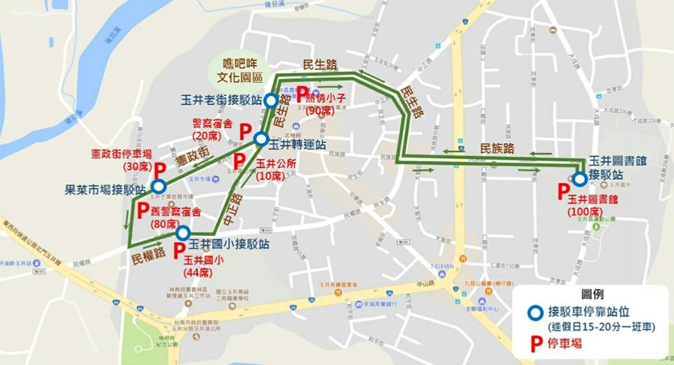

<!DOCTYPE html PUBLIC "-//W3C//DTD XHTML 1.0 Strict//EN" "http://www.w3.org/TR/xhtml1/DTD/xhtml1-strict.dtd">
<html xmlns="http://www.w3.org/1999/xhtml">
<head>
<meta http-equiv="Content-Type" content="text/html; charset=utf-8" />
<script type="text/javascript">
	route_name = '橘幹線';
	route_name_en = 'Orange Line';
	route_file_name = 'orange';
	route_type = 'orange';
	route_interval = ['佳里','麻豆','善化','玉井'];
</script>
<script src="../tools/web_model.js"></script> 
<script type="text/javascript">
	header_code();
</script>
</head>
<body>
<script type="text/javascript">
	block_header();
	block_route_map('由於適逢玉井芒果採收期，遊客湧入造成交通壅塞，七、八月開通「<span style="color: red; background: #FFFFFF; font-weight: bold;">玉井假日短程接駁巴士</span>」進入鬧區，一律免費。巴士從玉井圖書館接駁至商圈，每班次約15至20分鐘，機動發車，歡迎遊客多利用，路線圖請參考時刻表下方。');
	block_route_info(route_interval,'興南客運','尖30~40離60','里程計費','http://www.2384.com.tw/ebus/jsp/ajaxBus.jsp?pathId=1400&locale=zh_TW');
	block_fare(0, null);
	block_time_schedule('佳里','玉井','<center><div style="text-align: left; width: 960px; border:solid 1px; margin-top: 30px; background-color: #BBFFBB; padding: 15px;"><h2><span style="color: red;">玉井免費接駁車：</span></h2>\
<p>行駛時間：7/8~8/31，逢假日09:30~17:30<br />\
班距：每15~20分鐘一班<br />\
路線：玉井圖書館→玉井轉運站→民權路果菜市場→玉井國小→玉井轉運站→玉井圖書館</p><p></p></div></center>');
	block_transfer(transfer_jiali + transfer_madou + transfer_shanhua_railway_station + transfer_dane_district_office + transfer_yujing);
	block_copyright();
</script>
</body>
</html>